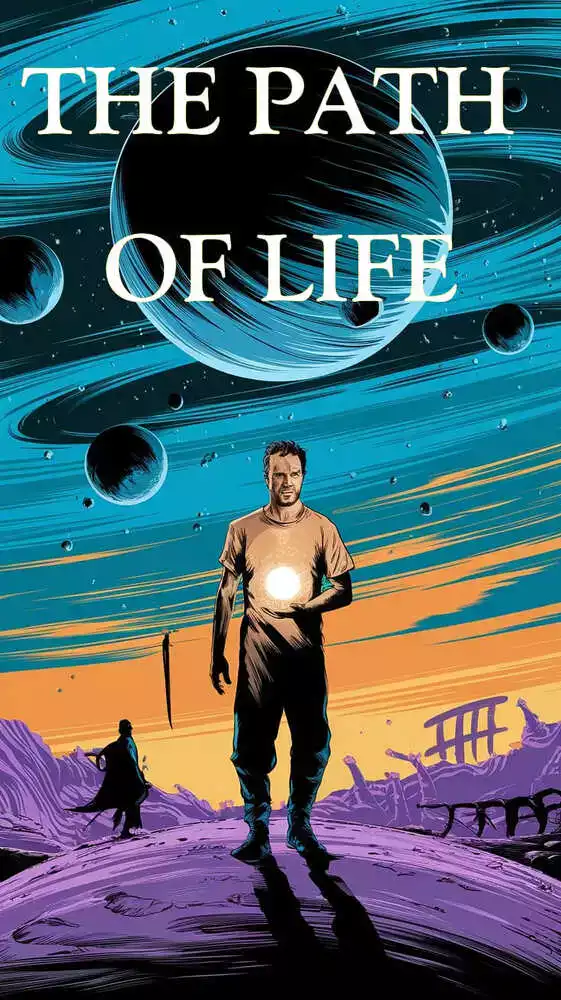

Christopher Bristol was a great person, but with bad luck in life. After dying in an accident, his soul travels to the afterlife, but along the way his soul deviates, taking him to a completely new planet for him. His path to becoming a God will bring him great sacrifices that will test his humanity.